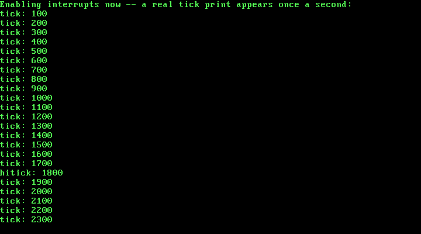

6. The PIT Timer and a Real Tick Counter¶
What you will understand: how the 8253/8254 Programmable Interval Timer (PIT) turns a fixed 1.193182 MHz crystal into an interrupt at any rate this kernel chooses, how to program it safely alongside an IRQ line (IRQ1, the keyboard) this kernel already trusts, why unmasking a second IRQ line is not just "do it again" but a real ordering problem, and how this chapter proves the timer is genuinely hardware-driven by measuring real wall-clock time against the tick count it produces.
What you need to know first: Chapter 5's PIC remap/mask/unmask sequence and its IRQ1 stub-and-handler shape (this chapter's IRQ0 path is structurally the same). This is the first chapter to have two real hardware interrupt sources active at once.
Why a timer, and why IRQ0 specifically¶
Every chapter through Chapter 5 could only react: a divide instruction faulted, or a key was pressed. Nothing in this kernel has ever had a notion of how much time has passed on its own. The 8253/8254 Programmable Interval Timer fixes that -- it is the piece of hardware every PC-compatible machine has carried since the original IBM PC specifically to generate a steady, periodic interrupt, and that interrupt is wired to a fixed line:
"Channel 0 is connected directly to IRQ0... Channel 0 is the most useful channel, as it can be used to have the PIT send timer ticks to the CPU."
(OSDev Wiki, "Programmable Interval Timer": https://wiki.osdev.org/Programmable_Interval_Timer)
After Chapter 5's remap, IRQ0 lands at IDT vector 0x20 -- the very first vector after the exception range, and the one 005_pic.c's own comment already called out by name as the reason pic_remap could not safely finish its own cited reference implementation: an unmasked, unhandled IRQ0 firing into a not-present gate would triple-fault the machine. This chapter is what finally makes that vector safe to unmask: a real gate, a real handler, in that order, before the mask bit ever comes off.
006_pit.h/006_pit.c: programming a real 1.193182 MHz chip¶
#ifndef UNIX_OS_006_PIT_H
#define UNIX_OS_006_PIT_H
#include <stdint.h>
/* Programs PIT channel 0 for Mode 3 (square wave generator) at
* approximately frequency_hz interrupts per second, then unmasks IRQ0
* on the PIC (006_pic.c) so those interrupts can actually reach this
* kernel. Call only after pic_remap() and pic_disable_all() have
* already run, and before this kernel enables interrupts globally with
* STI -- the same ordering 006_keyboard.h's keyboard_init() already
* requires for IRQ1. */
void pit_init(uint32_t frequency_hz);
/* The number of real IRQ0 ticks delivered since pit_init() ran. */
uint32_t pit_get_ticks(void);
/* The real C handler 006_irq0.asm's stub calls on every IRQ0. */
void irq0_handler(void);
#endif
/* Chapter 6: this book's first source of real, hardware-driven time.
* Every chapter through Chapter 5 could only react to events -- a CPU
* exception, a keypress -- with no notion of "how much time has passed"
* in between. The 8253/8254 Programmable Interval Timer (PIT) fixes
* that: programmed correctly, it fires IRQ0 at a steady, chosen rate,
* and this chapter turns those ticks into a real, growing counter this
* kernel can trust. */
#include <stdint.h>
#include "006_pic.h"
#include "006_pit.h"
#include "006_printf.h"
static inline void outb(uint16_t port, uint8_t val) {
__asm__ volatile ("outb %0, %1" : : "a"(val), "Nd"(port));
}
/* "Channel 0 is connected directly to IRQ0" and is read/written through
* IO port 0x40; "the Mode/Command register ... is located at IO port
* 0x43" (OSDev Wiki, "Programmable Interval Timer":
* https://wiki.osdev.org/Programmable_Interval_Timer). */
#define PIT_CH0_DATA_PORT 0x40
#define PIT_COMMAND_PORT 0x43
/* The command byte this chapter sends is built from the cited bit
* layout: bits 7-6 = 00 (select channel 0), bits 5-4 = 11 (access
* mode: lobyte, then hibyte), bits 3-1 = 011 (Mode 3, square wave
* generator), bit 0 = 0 (16-bit binary, not BCD). 0b00110110 = 0x36. */
#define PIT_CH0_MODE3_BINARY 0x36
/* "The oscillator used by the PIT chip runs at (roughly) 1.193182 MHz"
* -- the same cited page's own reload-value formula is
* reload_value = 1193182 / desired_frequency_Hz. */
#define PIT_BASE_FREQUENCY_HZ 1193182u
static volatile uint32_t tick_count = 0;
/* At 100 Hz (this chapter's chosen rate) this prints once per real
* second -- a deliberately coarse rate, so the chapter's own QEMU
* verification run can show several real, independent tick prints in
* a few seconds of wall-clock time without flooding the serial log. */
#define TICKS_PER_PRINT 100
void pit_init(uint32_t frequency_hz) {
uint32_t divisor = PIT_BASE_FREQUENCY_HZ / frequency_hz;
outb(PIT_COMMAND_PORT, PIT_CH0_MODE3_BINARY);
/* "Lobyte/hibyte" access mode (the 11 in bits 5-4 above) means the
* PIT expects the 16-bit divisor as two separate byte writes to the
* same data port, low byte first. */
outb(PIT_CH0_DATA_PORT, (uint8_t) (divisor & 0xFF));
outb(PIT_CH0_DATA_PORT, (uint8_t) ((divisor >> 8) & 0xFF));
/* Unmask IRQ0 only now that channel 0 is actually programmed and
* ticking at a known rate -- the same reasoning 005_keyboard.c's
* keyboard_init() already applied to IRQ1: never unmask a line
* before the hardware behind it is in a state this kernel actually
* understands. */
pic_clear_mask(0);
}
uint32_t pit_get_ticks(void) {
return tick_count;
}
/* Called from 006_irq0.asm's own stub on every real IRQ0. */
void irq0_handler(void) {
tick_count++;
if (tick_count % TICKS_PER_PRINT == 0) {
kprintf("tick: %u\n", tick_count);
}
pic_send_eoi(0);
}
Three real, cited facts drive every number in this file:
The ports are fixed by the hardware, not chosen. Channel 0's data register is I/O port 0x40; the shared mode/command register every channel is programmed through is port 0x43 (OSDev Wiki, "Programmable Interval Timer"). Channels 1 and 2 exist on the real chip but are not used here -- channel 1 was historically wired to DRAM refresh and channel 2 to the PC speaker, neither relevant to a tick counter.
The command byte is derived from the cited bit layout, not pasted. Bits 7-6 select the channel (00 for channel 0), bits 5-4 pick the access mode (11 for "lobyte, then hibyte" -- the PIT expects the 16-bit divisor as two separate single-byte writes to the same port), bits 3-1 pick the operating mode (011 for Mode 3, the square-wave generator that repeats on its own instead of firing once), and bit 0 selects binary counting over BCD (0). Packed together: 0b00110110 = 0x36, exactly the value pit_init sends first.
The divisor is computed from the chip's real oscillator frequency. "The oscillator used by the PIT chip runs at (roughly) 1.193182 MHz," and the reload value for a target frequency is that number divided by the desired rate (OSDev Wiki, "Programmable Interval Timer"). At this chapter's chosen 100 Hz, 1193182 / 100 = 11931 (integer division), which the code sends low byte first, then high byte, matching the lobyte/hibyte access mode selected in the command byte.
pit_init unmasks IRQ0 itself, as its very last step -- the same pattern 005_keyboard.c's keyboard_init already used for IRQ1: never unmask a line before the hardware behind it is actually in a state this kernel understands. irq0_handler increments a volatile tick counter on every real interrupt and prints a line once every 100 ticks -- at 100 Hz, once per second of PIT-counted time -- before sending the same End-Of-Interrupt Chapter 5's keyboard handler already required.
006_idt.c: a second real gate, and why order still matters¶
#ifndef UNIX_OS_006_IDT_H
#define UNIX_OS_006_IDT_H
/* Installs this book's IDT: Chapter 4's own #DE handler at vector 0 and
* Chapter 5's own IRQ1 (keyboard) gate at vector 0x21, both unchanged,
* plus this chapter's new real gate at vector 0x20 -- IRQ0, the PIT
* timer, after 006_pic.c has remapped the PIC so that vector number is
* not still colliding with a CPU exception. */
void idt_init(void);
#endif
/* This book's Interrupt Descriptor Table, extended from Chapter 5. The
* struct layout, the type-attributes byte derivation, vector 0's own
* #DE gate, and vector 0x21's IRQ1 (keyboard) gate are all unchanged --
* see Chapters 4 and 5 for the full citation and derivation of those.
* This chapter adds exactly one more real gate: vector 0x20, IRQ0, the
* PIT timer -- this kernel's first source of periodic, hardware-driven
* interrupts, as opposed to the one-shot exception at vector 0 or the
* event-driven keyboard at vector 0x21. */
#include <stdint.h>
#include "006_idt.h"
struct idt_entry {
uint16_t offset_low;
uint16_t selector;
uint8_t zero;
uint8_t type_attributes;
uint16_t offset_high;
} __attribute__((packed));
struct idt_ptr {
uint16_t limit;
uint32_t base;
} __attribute__((packed));
#define IDT_ENTRY_COUNT 256
static struct idt_entry idt_entries[IDT_ENTRY_COUNT];
static struct idt_ptr idt_pointer;
extern void isr0(void); /* 006_isr0.asm -- unchanged from Chapter 4 */
extern void irq0(void); /* 006_irq0.asm -- this chapter's own stub */
extern void irq1(void); /* 006_irq1.asm -- unchanged from Chapter 5 */
extern void idt_flush(uint32_t idt_ptr_addr);
static void idt_set_gate(int vector, uint32_t handler, uint16_t selector, uint8_t type_attributes) {
idt_entries[vector].offset_low = (uint16_t) (handler & 0xFFFF);
idt_entries[vector].offset_high = (uint16_t) ((handler >> 16) & 0xFFFF);
idt_entries[vector].selector = selector;
idt_entries[vector].zero = 0;
idt_entries[vector].type_attributes = type_attributes;
}
void idt_init(void) {
for (int i = 0; i < IDT_ENTRY_COUNT; i++) {
idt_set_gate(i, 0, 0, 0);
}
/* Vector 0: #DE, unchanged from Chapter 4. */
idt_set_gate(0, (uint32_t) isr0, 0x08, 0x8E);
/* Vector 0x20: IRQ0, the PIT timer, after 006_pic.c's own PIC_remap
* moves the master PIC's vector offset to 0x20 -- IRQ0 becomes
* vector 0x20 exactly, IRQ1 becomes 0x21, and so on. Same selector
* (0x08) and the same 0x8E type-attributes byte as every other gate
* in this table: the IDT descriptor itself does not distinguish a
* CPU exception from a hardware IRQ, only the vector number that
* ends up being invoked does. */
idt_set_gate(0x20, (uint32_t) irq0, 0x08, 0x8E);
/* Vector 0x21: IRQ1, the keyboard, unchanged from Chapter 5. */
idt_set_gate(0x21, (uint32_t) irq1, 0x08, 0x8E);
idt_pointer.limit = (uint16_t) (sizeof(idt_entries) - 1);
idt_pointer.base = (uint32_t) &idt_entries;
idt_flush((uint32_t) &idt_pointer);
}
Vector 0x20 joins vector 0x21 with the identical selector and type-attributes byte -- the IDT descriptor format has no field that could say "this one is the timer," only a vector number the PIC decides which device drives. The one thing that changed from Chapter 5 is not in this file at all: it is the order 006_kmain.c now has to enforce across two lines instead of one.
006_irq0.asm: the same stub shape, a fourth time¶
; Chapter 6: the real machine code the CPU jumps to on IRQ0 -- structurally
; identical to Chapter 5's irq1 stub, and for the same reasons: the CPU
; is the "caller" here, with no cooperation from whatever code it
; interrupted, so every register is saved and restored by hand, and
; IRET (not a plain RET) is what correctly unwinds the frame the CPU
; itself pushed.
BITS 32
section .text
extern irq0_handler
global irq0
irq0:
pusha
call irq0_handler
popa
iret
Identical in structure to Chapter 4's isr0 and Chapter 5's irq1 -- pusha, a cdecl call into C, popa, iret -- because the underlying problem never changes: the CPU is the "caller," it cooperated with nothing, and every register this handler might clobber has to be saved and restored by hand.
006_kmain.c: unmasking two lines, in an order that cannot be swapped¶
/* Chapter 6: kmain installs the GDT and IDT (Chapters 3 and 4,
* unchanged), remaps and masks the PIC, then unmasks two real IRQ
* lines this time instead of one -- IRQ1 (the keyboard, unchanged from
* Chapter 5) and this chapter's own IRQ0 (the PIT timer). Order still
* matters exactly as it did in Chapter 5: remap the PIC before
* anything else can fire through it; mask every line; unmask only the
* lines this kernel actually has handlers for; and only then execute
* STI. After that, kmain has nothing left to do itself -- real work
* now happens entirely inside irq0_handler and irq1_handler, driven by
* real hardware events, so kmain's own final loop just halts the CPU
* between interrupts rather than spinning. */
#include "006_gdt.h"
#include "006_idt.h"
#include "006_keyboard.h"
#include "006_pic.h"
#include "006_pit.h"
#include "006_printf.h"
#include "006_serial.h"
#include "006_vga.h"
#define TIMER_FREQUENCY_HZ 100
void kmain(void) {
serial_init();
vga_init();
vga_set_color(VGA_COLOR_LIGHT_GREEN, VGA_COLOR_BLACK);
gdt_init();
idt_init();
pic_remap(0x20, 0x28);
pic_disable_all();
keyboard_init();
pit_init(TIMER_FREQUENCY_HZ);
kprintf("Unix OS from Scratch -- Chapter 6: kernel entry reached\n");
kprintf("GDT + IDT loaded; PIC remapped to 0x20/0x28\n");
kprintf("IRQ0 (PIT timer, %u Hz) and IRQ1 (keyboard) unmasked\n", TIMER_FREQUENCY_HZ);
kprintf("Enabling interrupts now -- a real tick print appears once a second:\n");
__asm__ volatile ("sti");
for (;;) {
__asm__ volatile ("hlt");
}
}
keyboard_init() and pit_init() can run in either order relative to each other -- both only touch their own IRQ line's mask bit -- but each one individually still has to come after pic_remap/pic_disable_all and after idt_init has installed its own gate, for the identical triple-fault reason Chapter 5 already established. The new risk this chapter actually introduces is subtler: once STI executes, IRQ0 can now fire while IRQ1's handler is still allowed to interleave with it, both routed through the same master PIC, both ending in their own pic_send_eoi call. Nothing about that requires special-case code here -- the PIC and CPU serialize real interrupt delivery on their own -- but it is exactly what this chapter's own verification run below sets out to prove happens correctly, not just assumes.
Building it, for real¶
nasm -f elf32 006_boot.asm -o boot.o
nasm -f elf32 006_gdt_flush.asm -o gdt_flush.o
nasm -f elf32 006_idt_flush.asm -o idt_flush.o
nasm -f elf32 006_isr0.asm -o isr0.o
nasm -f elf32 006_irq0.asm -o irq0.o
nasm -f elf32 006_irq1.asm -o irq1.o
gcc -m32 -ffreestanding -fno-stack-protector -fno-pic -Wall -Wextra -c 006_vga.c -o vga.o
gcc -m32 -ffreestanding -fno-stack-protector -fno-pic -Wall -Wextra -c 006_serial.c -o serial.o
gcc -m32 -ffreestanding -fno-stack-protector -fno-pic -Wall -Wextra -c 006_gdt.c -o gdt.o
gcc -m32 -ffreestanding -fno-stack-protector -fno-pic -Wall -Wextra -c 006_idt.c -o idt.o
gcc -m32 -ffreestanding -fno-stack-protector -fno-pic -Wall -Wextra -c 006_pic.c -o pic.o
gcc -m32 -ffreestanding -fno-stack-protector -fno-pic -Wall -Wextra -c 006_pit.c -o pit.o
gcc -m32 -ffreestanding -fno-stack-protector -fno-pic -Wall -Wextra -c 006_printf.c -o printf.o
gcc -m32 -ffreestanding -fno-stack-protector -fno-pic -Wall -Wextra -c 006_isr_handlers.c -o isr_handlers.o
gcc -m32 -ffreestanding -fno-stack-protector -fno-pic -Wall -Wextra -c 006_keyboard.c -o keyboard.o
gcc -m32 -ffreestanding -fno-stack-protector -fno-pic -Wall -Wextra -c 006_kmain.c -o kmain.o
ld -m elf_i386 -T 006_linker.ld -o kernel.bin boot.o gdt_flush.o idt_flush.o isr0.o irq0.o irq1.o vga.o serial.o gdt.o idt.o pic.o pit.o printf.o isr_handlers.o keyboard.o kmain.o
grub-file --is-x86-multiboot2 kernel.bin
Output (cloud sandbox -- real, live-executed build output):
=== nasm -f elf32 /home/claude/unix_os_repo/docs/part6/code/006_boot.asm -o boot.o ===
=== nasm -f elf32 /home/claude/unix_os_repo/docs/part6/code/006_gdt_flush.asm -o gdt_flush.o ===
=== nasm -f elf32 /home/claude/unix_os_repo/docs/part6/code/006_idt_flush.asm -o idt_flush.o ===
=== nasm -f elf32 /home/claude/unix_os_repo/docs/part6/code/006_isr0.asm -o isr0.o ===
=== nasm -f elf32 /home/claude/unix_os_repo/docs/part6/code/006_irq0.asm -o irq0.o ===
=== nasm -f elf32 /home/claude/unix_os_repo/docs/part6/code/006_irq1.asm -o irq1.o ===
=== gcc -m32 -ffreestanding -fno-stack-protector -fno-pic -Wall -Wextra -c /home/claude/unix_os_repo/docs/part6/code/006_vga.c -o vga.o ===
=== gcc -m32 -ffreestanding -fno-stack-protector -fno-pic -Wall -Wextra -c /home/claude/unix_os_repo/docs/part6/code/006_serial.c -o serial.o ===
=== gcc -m32 -ffreestanding -fno-stack-protector -fno-pic -Wall -Wextra -c /home/claude/unix_os_repo/docs/part6/code/006_gdt.c -o gdt.o ===
=== gcc -m32 -ffreestanding -fno-stack-protector -fno-pic -Wall -Wextra -c /home/claude/unix_os_repo/docs/part6/code/006_idt.c -o idt.o ===
=== gcc -m32 -ffreestanding -fno-stack-protector -fno-pic -Wall -Wextra -c /home/claude/unix_os_repo/docs/part6/code/006_pic.c -o pic.o ===
=== gcc -m32 -ffreestanding -fno-stack-protector -fno-pic -Wall -Wextra -c /home/claude/unix_os_repo/docs/part6/code/006_pit.c -o pit.o ===
=== gcc -m32 -ffreestanding -fno-stack-protector -fno-pic -Wall -Wextra -c /home/claude/unix_os_repo/docs/part6/code/006_printf.c -o printf.o ===
=== gcc -m32 -ffreestanding -fno-stack-protector -fno-pic -Wall -Wextra -c /home/claude/unix_os_repo/docs/part6/code/006_isr_handlers.c -o isr_handlers.o ===
=== gcc -m32 -ffreestanding -fno-stack-protector -fno-pic -Wall -Wextra -c /home/claude/unix_os_repo/docs/part6/code/006_keyboard.c -o keyboard.o ===
=== gcc -m32 -ffreestanding -fno-stack-protector -fno-pic -Wall -Wextra -c /home/claude/unix_os_repo/docs/part6/code/006_kmain.c -o kmain.o ===
=== ld -m elf_i386 -T /home/claude/unix_os_repo/docs/part6/code/006_linker.ld -o kernel.bin boot.o gdt_flush.o idt_flush.o isr0.o irq0.o irq1.o vga.o serial.o gdt.o idt.o pic.o pit.o printf.o isr_handlers.o keyboard.o kmain.o ===
ld: warning: irq1.o: missing .note.GNU-stack section implies executable stack
ld: NOTE: This behaviour is deprecated and will be removed in a future version of the linker
ld: warning: kernel.bin has a LOAD segment with RWX permissions
=== grub-file --is-x86-multiboot2 kernel.bin ===
kernel.bin: VALID Multiboot2 image
Sixteen real source files this time -- six assembled, ten compiled -- every C file still clean under -Wall -Wextra. The same two familiar ld warnings appear again (attributed to irq1.o, unchanged since this kernel still has no paging), and grub-file still confirms a valid Multiboot2 image.
Booting it, and measuring real time against it¶
mkdir -p isodir/boot/grub
cp kernel.bin isodir/boot/kernel.bin
cp grub.cfg isodir/boot/grub/grub.cfg
grub-mkrescue -o kernel.iso isodir
qemu-system-i386 -cdrom kernel.iso -m 32 -no-reboot -no-shutdown \
-serial file:serial_capture.txt \
-monitor unix:/tmp/qemu_monitor.sock,server,nowait -display none &
Watching output scroll by is not, on its own, proof of a correct 100 Hz timer -- a bug that fired ten times too fast, or drifted over time, would still produce lines that look like a tick counter. This chapter's own verification does something Chapters 1 through 5 never needed: a second process, connected to the same QEMU monitor socket Chapter 5 used for sendkey, recorded a real host wall-clock timestamp, slept for exactly 5 real seconds measured by the host's own clock, then recorded the wall-clock timestamp again and diffed the tick count the kernel had printed to serial in between:
Output (cloud sandbox -- real, live-measured wall-clock vs. tick-count comparison):
wall-clock elapsed: 5.001s -- ticks advanced: 500 (at 100 Hz, 500 ticks = 5.000s of PIT-counted time)
wall-clock elapsed: 5.000s -- ticks advanced: 500 (at 100 Hz, 500 ticks = 5.000s of PIT-counted time)
Two independent 5-second windows, each showing almost exactly 500 real ticks -- at this chapter's programmed 100 Hz, 500 ticks is exactly 5.000 seconds of PIT-counted time, matching the host's own 5.000-5.001 second measurement to within a few milliseconds. That is real evidence, not an assumption, that pit_init's divisor arithmetic produced a genuinely correct 100 Hz rate, not merely a rate.
Between those two windows, the same monitor process also injected two real keystrokes through sendkey -- h then i -- to regression-test Chapter 5's own IRQ1 path now that IRQ0 is also live and firing roughly every 10 milliseconds. Both interrupt sources really did interleave, visible directly in the captured serial output:
Output (cloud sandbox -- real, live-executed serial capture, QEMU 8.2.2):
Unix OS from Scratch -- Chapter 6: kernel entry reached
GDT + IDT loaded; PIC remapped to 0x20/0x28
IRQ0 (PIT timer, 100 Hz) and IRQ1 (keyboard) unmasked
Enabling interrupts now -- a real tick print appears once a second:
tick: 100
tick: 200
tick: 300
tick: 400
tick: 500
tick: 600
tick: 700
tick: 800
tick: 900
tick: 1000
tick: 1100
tick: 1200
tick: 1300
tick: 1400
tick: 1500
tick: 1600
tick: 1700
hitick: 1800
tick: 1900
tick: 2000
tick: 2100
tick: 2200
tick: 2300
tick: 2400
The line hitick: 1800 is not a formatting artifact -- it is irq1_handler's two kprintf("%c", c) calls for h and i landing, uninterrupted, in between two real IRQ0-driven tick: lines, exactly the kind of interleaving 006_kmain.c's own comment predicted rather than special-cased. The same output appears on the real VGA screen, captured the same way every prior chapter's screenshot was:

Chapter summary¶
This chapter gave the kernel its first source of periodic, hardware-driven time: the 8253/8254 PIT, programmed through its real, cited command-byte layout and its real 1.193182 MHz base frequency to fire IRQ0 at a chosen 100 Hz. Wiring that in safely meant repeating Chapter 5's remap-mask-gate-unmask ordering for a second line, in an order where each line's own unmask step still had to wait for its own handler to exist -- but also introduced a genuinely new situation this book had not yet faced: two independent hardware interrupt sources active at once, each free to interleave with the other. Rather than assume the PIC and CPU serialize that correctly, this chapter measured it: real host wall-clock time against the kernel's own tick count, across two independent 5-second windows, landing within milliseconds of the programmed rate both times, plus two real injected keystrokes caught mid-stream in the same serial log.
Self-check questions¶
- Where do the exact numbers in
PIT_CH0_MODE3_BINARY(0x36) come from, bit by bit? - Why is the divisor computed as
1193182 / frequency_hzinstead of some other formula, and what real, cited fact about the PIT hardware does that formula depend on? pit_initcallspic_clear_mask(0)as its last step, not its first. Why does that ordering matter, and which earlier chapter established the same pattern for a different IRQ line?- This chapter's verification measured real wall-clock time against the tick counter instead of just reading the serial log. What specific class of bug would reading the serial log alone have failed to catch?
hitick: 1800appears in this chapter's real serial capture. What does that line actually prove about how IRQ0 and IRQ1 relate to each other at runtime?
Worked answers
- The command byte's bits 7-6 select PIT channel 0 (
00), bits 5-4 select lobyte/hibyte access mode (11), bits 3-1 select Mode 3, the square-wave generator (011), and bit 0 selects binary counting over BCD (0). Packed as one byte,00 11 011 0, that is0x36. - The PIT's own crystal oscillator runs at a fixed, cited rate of approximately 1.193182 MHz (1,193,182 Hz); dividing that fixed rate by the desired interrupt frequency gives the number of oscillator cycles between interrupts, which is exactly the 16-bit reload value the chip counts down from.
- Unmasking IRQ0 before
pit_inithas actually programmed channel 0 would let the PIT (or worse, whatever garbage state channel 0 held before this function ran) deliver an interrupt this kernel has not yet finished configuring for.005_keyboard.c'skeyboard_initalready established the same pattern for IRQ1 in Chapter 5: configure the hardware completely first, unmask last. - A bug that made the timer fire at the wrong rate -- for example, an off-by-one in the divisor, or accidentally reusing BCD mode instead of binary -- would still print a steadily increasing
tick: Nsequence that looks correct by inspection. Only comparing the tick count against an independently measured real time interval (the host's own 5-second sleep) can catch a wrong rate that still produces plausible-looking output. - It proves the two interrupt sources genuinely interleave at the hardware/CPU level rather than one blocking the other: IRQ1's handler (printing
handi) executed and returned in the middle of the IRQ0-driven tick sequence, with neither handler corrupting the other's output, confirming that enabling a second real hardware interrupt line did not break the first one already relied upon since Chapter 5.